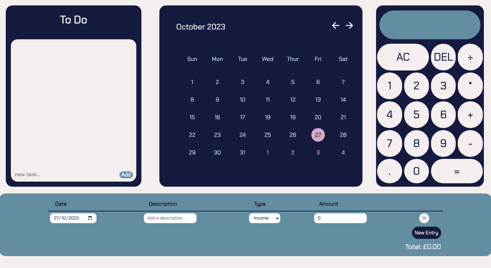
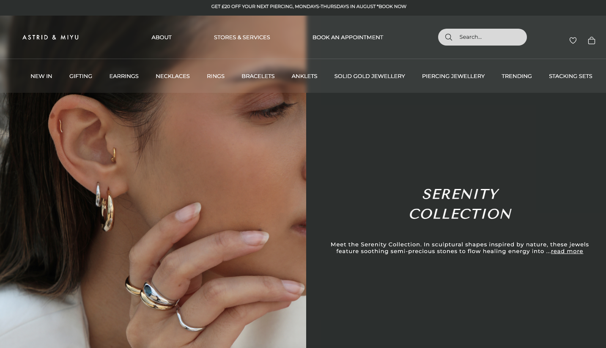
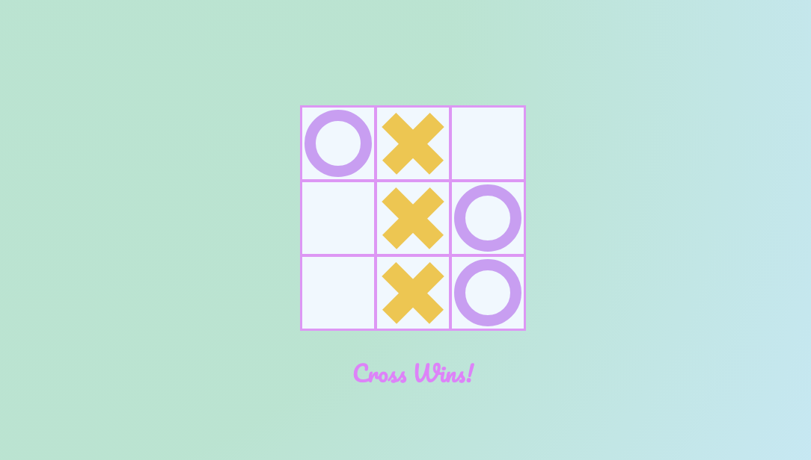

Projects
Film App

Click Image to see app
With the use of Python, MYSQL, HTML, CSS and the framework Flask I created a film app linked to a database of films. This exercise required me to connect to a database, create new records, update said records, read the records and delete specific records if required. I initally created this app using purely Python and MYSQL (SQLITE) but wanted to challenge myself in using a framework I had yet to learn. Flask intrigues me and I would like to take this app to the next level by incorporating imagery, blurbs and a login/registration ability that acknowledges if the user has admin access and therefore the abilty to modify the database.
GitHub codeProductivity Project
Click Image to see app
Using HTML, CSS and JAVASCRIPT, I created a productivity helper app. The app contains a functional calculator, calendar, a to do list where the user can check off and delete tasks and a budget tracker with local storage implemented. To improve this project in the future I am working on gaining a good understanding of working with Flask and perhaps implementing a user log in and database.
GitHub codeSite Clone
Click Image to see app
Using HTML, CSS and JAVASCRIPT, I successfully aesthetically cloned a well known jewellery website. This project was completed in week 3 of my course and I have since improved my work flow and responsive design. I found with this project, starting with the desktop layout led to difficulties at the time in making it responsive on mobile. I am very pleased with the end result on desktop and it has since helped me learn the importance of a thought out work flow. I now approach most projects with a mobile first approach which has improved my web design.
GitHub codeTic Tac Toe
Click Image to see app
Using HTML, CSS and JAVASCRIPT I created a simple, fun tic tac toe game. A classic! I enjoyed implementing my knowledge into something that is purely focussed on entertainment. I am excited to see what more I can do in this area and gather the skills required to create more detailed games.
GitHub code